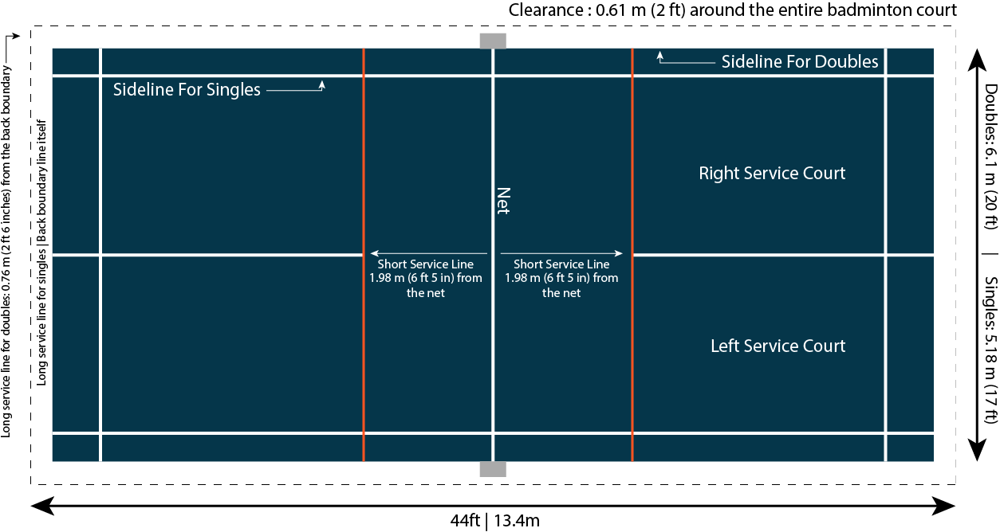
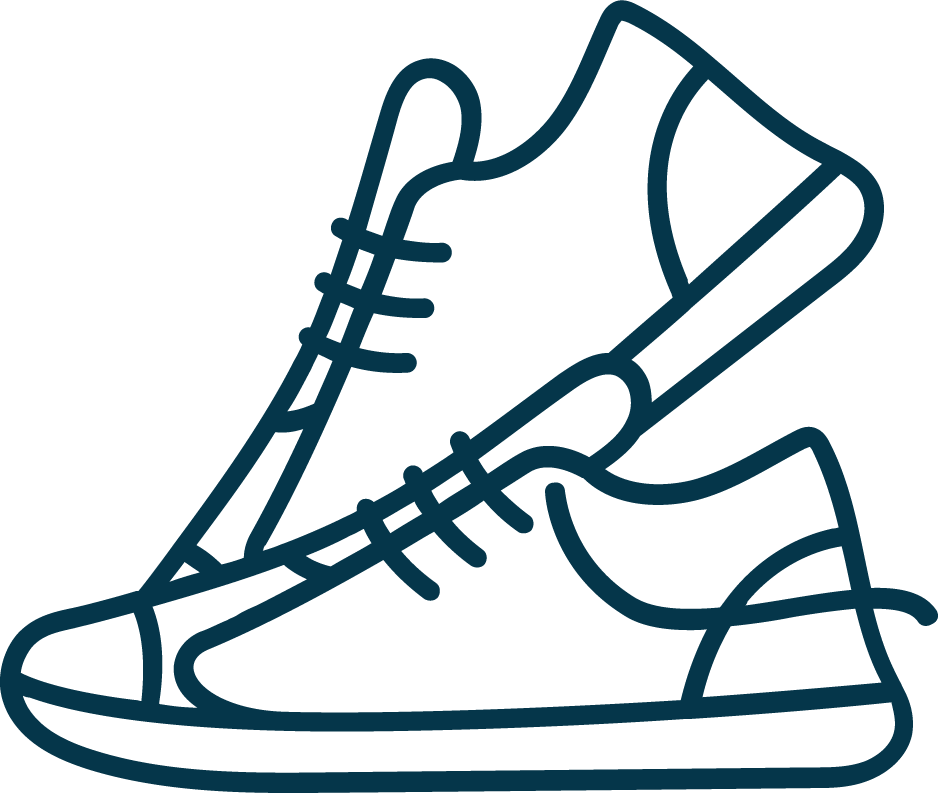

Badminton is a racket sport played by two or four players. These players hit a shuttlecock over a net and score points through fast, controlled rallies. The aim of this game is simple. You have to send the shuttle to the opponent’s court before it touches the ground on your side. Badminton has become one of the fastest-growing racket sports because it blends speed, skill and accessibility. This game requires less sports equipment with a friendly learning curve. The game has gained its fair share of popularity across Asia and Europe.
The Origins of Badminton
Badminton originated from various local games of different origins, such as “Battledore and Shuttlecock†in Europe, “Ti Jian Zi†in China and “Poona†in India. All other similar games operate on one rule: you have to keep the shuttlecock in the air as long as possible. These were played for fun rather than formal competition. In 1860, the ground rules for this game were developed in India by British colonists. The sport became known as ‘badminton’ after it was played at the Duke of Beaufort’s Badminton House around 1873. After that, it began to take shape as a formal sport. Clubs formed, and the game started to evolve with standardised courts and scoring. The first unified rules for the game were written in 1877 by the Bath Badminton Club. The world’s first official badminton tournament, the “All England Badminton Championshipsâ€, was held in London in 1899. The Badminton World Federation (BWF) was formed in 1934 to promote the game worldwide.
What is the Modern Sport of Badminton?
Modern badminton is mostly played indoors to avoid factors such as the weather. It is the fastest indoor sport of today. It is a precision-based racket sport that is played in singles or doubles. Players aim to outmanoeuvre their opponents through well-placed shots and sharp movement. The badminton court is divided by a central net, with marked boundaries for each format. The whole sport revolves around hitting a shuttlecock so it lands inside the opponent’s side. A badminton match is played in rallies. Badminton blends athletic speed with tactical thinking. It is a sport built on timing, control, and quick reactions.
Official Rules and Scoring of Badminton
The first set of badminton rules was established in 1877. The game was played with 15 points per set in a best-of-3 for men and 11 points for women. This point system was used for an extended period. The Badminton World Federation (BWF) experimented with a 7-point system for best-of-5 matches, down from the 15-point system. In this system, if the match reaches 6-7, players can mutually decide to play 8 points. With this point system, the game’s runtime was causing an issue. BWF did not adopt this system, which was not helping regulate the overall match duration.
Score Rules as of Now
The BWF tested the current badminton rules in December 2005 to control the duration of the game. The rule was officially adopted in August 2006. According to this rule system, the game was increased to 21 points, with the best-of-3 format for both men and women. According to this rule, one side must win a set by two points. If the score is 29-29, the first team to reach 30 points wins the match. This change made matches faster, more engaging, and easier for spectators to follow. The updated structure also increased fairness and reduced overly long games.
Serving Rules
Officially, when a player serves, the shuttlecock must hit below the waist or below 1.15m from the surface of the court. The shuttlecock must be hit at the cork with forward continuous motion. The player must be standing cross-court diagonally and with both feet on the ground inside the service box. The receiver must stand in the service box diagonally opposite the server. In doubles, the right to serve alternates between partners and teams. The server is on the right side of the court when their score is even and on the left side when it is odd. According to the BWF serve law, “neither side shall cause undue delay to the delivery of the service once the server and receiver are readyâ€.
Court Size
A standard badminton court follows the measurements and layout defined by the Badminton World Federation (BWF). Here is the clear, simple breakdown:
- Total length: 13.4 m (44 ft)
- Clearances: 0.61 m (2 ft) around the entire court
- Total width: Doubles: 6.1 m (20 ft) Singles: 5.18 m (17 ft)
- Short service line: 1.98 m (6 ft 5 in) from the net
- Long service line for doubles: 0.76 m (2 ft 6 in) from the back boundary
- Long service line for singles: Back boundary line itself

Essential Equipment Used in Badminton
Badminton requires only a few pieces of equipment, yet each plays a crucial role in how the game feels and performs.
Badminton Racket
The racket is the most important piece of equipment. Lightweight rackets allow fast swings, while slightly heavier or balanced rackets give more control and stability. You must choose a racket according to your skill level.
Shuttlecock
Shuttlecocks come in feathered, synthetic and hybrid versions. Feathered shuttles are used in professional matches for precision and flight consistency, while synthetic ones are durable and ideal for practice or casual games. The choice of shuttlecock affects speed, spin, and overall gameplay feel.
Badminton Net
The net separates the two sides of the court. The net ensures fair play and defines the area over which the shuttlecock must travel. As per the Badminton World Federation (BWF) rules, the official measurement of the net is:
- Width: 6.1 m (20 ft)
- Height at the Posts: 1.55 m (5 ft 1 in)
- Height at the Centre of the Court: 1.524 m (5 ft)
- Doubles Court: 6.1 m (20 ft) full court
- Singles Court: 5.18 m (17 ft) inner sidelines
Court Shoes
Playing badminton involves sudden movement. Proper court shoes provide grip, cushioning, and ankle support, reducing the risk of injury while improving movement efficiency on the court.

Other Accessories
Wristbands, grips, headbands and knee caps are used by players to enhance comfort and performance. Grips improve racket handling. Wristbands and headbands absorb sweat to maintain control during intense rallies.
Significant Tournaments and Champions
Prestigious tournaments strongly shaped Badminton’s rise as a global competitive sport. The All England Open, one of the oldest and most respected events, became a benchmark for excellence. Later, the BWF World Championships and major team events, such as the Thomas Cup and Uber Cup, expanded the sport’s international reach. Through these platforms, legendary players emerged whose skill, consistency, and dominance influenced playing styles across generations. Their achievements helped elevate badminton’s status.
Conclusion
Badminton is a precision-based sport enjoyed worldwide today. It’s a combination of speed, skill and strategy. This game is accessible to beginners while challenging for professionals. Modern tournaments and legendary champions have shaped badminton into a globally recognised competitive sport. Knowing the fundamentals and respecting the equipment and rules ensures an enjoyable experience on the court.